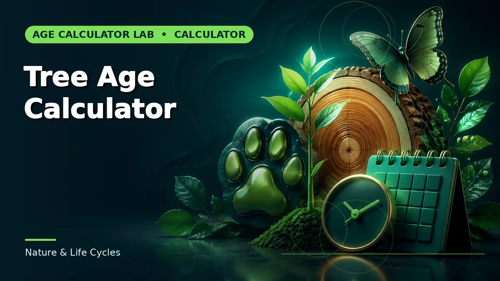
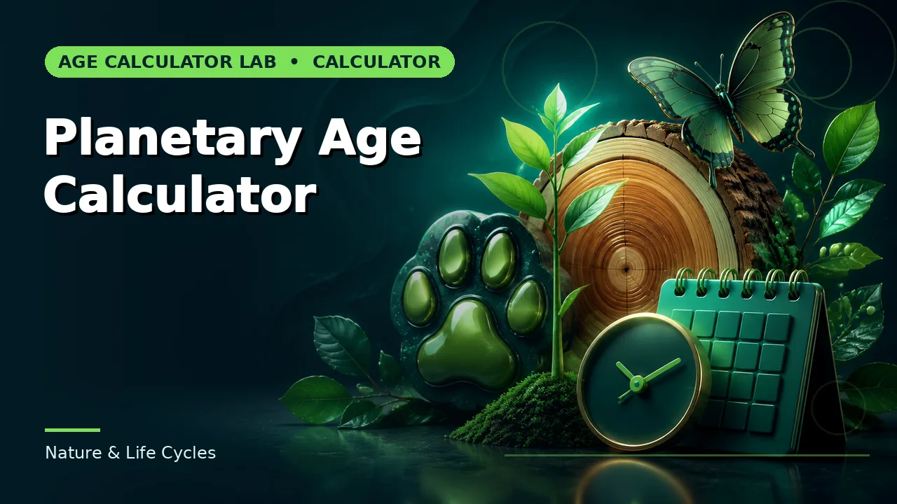
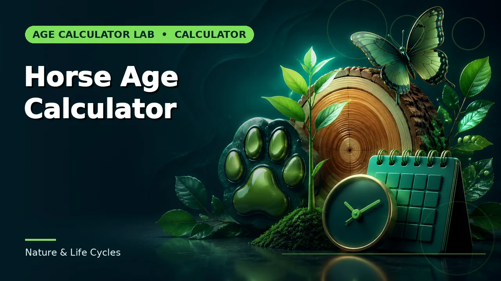

Nature & Life Cycles
Pet age comparisons, tree age estimates and age on other planets. Educational models throughout.

Dog Age Calculator
Dog age expressed as an approximate human-age equivalent.

Cat Age Calculator
Cat age expressed as an approximate human-age equivalent.

Tree Age Calculator
An estimated tree age from trunk circumference and growth factor.

Planetary Age Calculator
An Earth age converted to approximate ages on other planets.

Horse Age Calculator
Horse age expressed as a simple human-age comparison.

Rabbit Age Calculator
Rabbit age expressed as a simple human-age comparison.
Bird Age Calculator
Bird age expressed as a broad educational human-age comparison.
Turtle Age Calculator
Turtle age represented using a simplified life-stage comparison.
Fish Age Calculator
An approximate human-equivalent comparison for a pet fish's age.
Guides for this category
Understand the conventions before the number goes into a record or a decision.
Browse the rest of the 161 calculators
Ten more groups covering assessments, pregnancy, work, dates and cultural references.